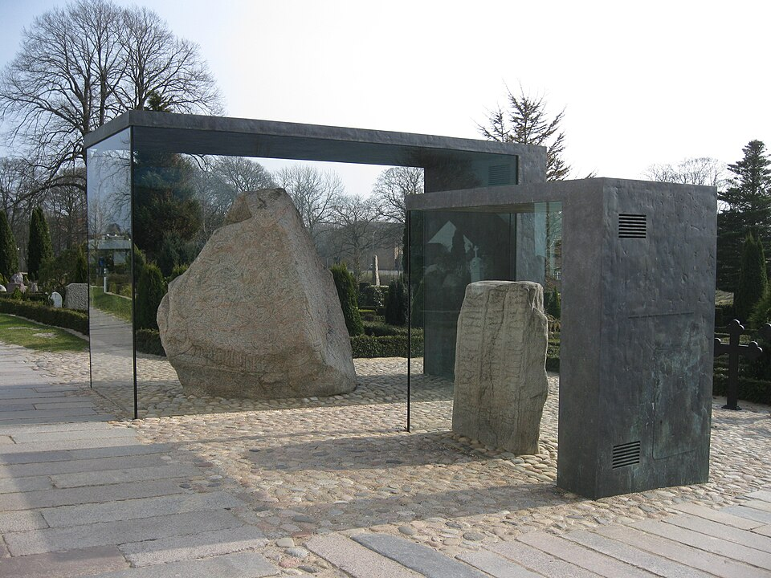

Викинги
Эпоха кораблей и клятв: кто они были, куда ходили — и что оставили после себя.
«Тяжко на земле — от великой нечести: / время топоров, время мечей — щиты разбиты; / и не пожалеет никто никого.»
— «Прорицание вёльвы», строфа 45 (Старшая Эдда) (перевод мой)

Кто такие викинги
Не отдельный народ, а образ жизни: северянин становился викингом, когда садился в корабль и уходил на вылазку.
Слово «викинг» (древнескандинавское víkingr) — от слова «бухта/гавань»: так называли того, кто ходит на вылазки по морю. Викингами были не «отдельный народ», а норманны из Норвегии, Дании и Исландии — те самые северяне, чьи боги описаны на других страницах этого сайта. Эпоха их кораблей охватывает 793–1066 годы, а отдельные рейды тянутся до ~1100-го: от первого удара по Линдисфарну до Гастингса.
Ключевые даты
Хронология эпохи — от первого удара по монастырю до последнего рейда.
Линдисфарн: налёт на монастырь в Англии — «начало» для всех, кто это потом записал.
Дублин: первая постоянная база на западе.
Рейн: первый выход викингов в реки Европы.
Париж: первая осада столицы Франции — и первые дани, которые за неё заплатили.
Колонизация Исландии: заселение пустого острова, на котором позже родится традиция записей.
Великая языческая армия выходит в Англию и берёт половину королевств.
Эрик Раусы осваивает Гренландию; около 1000 года Лейфур доходит до Америки — Винланда.
Олаф Трейгвассон: христианство становится религией Норвегии.
Стиклестад: гибель Олафа Харальдссона (Хардрады) — последнего великого короля старой веры.
Гастингс: конец эпохи; последний рейд — 1103 год, Оркнеи.
Экспедиции и море
Один корабль — три направления: на запад к монастырям, на восток по рекам, на юг в Средиземное море.
Запад
Ирландия и Англия были первыми: базы у побережий, затем Великая языческая армия и захват половины королевств. Дальше — Франция: дань за каждый проход по реке, а в 911-м Ролло получил Нормандию.
Восток
Через Балтику северяне вышли на Русь и пошли «из варяг в греки»: по Днепру к Чёрному морю, через него — в Византию; через Волгу торговали с халифатом. Это был не только бой, но и караванная торговля — мёдом, воском, мехами.
Юг
Через Пиренеи викинги дошли до Средиземного моря: в 936-м ударили по Марселю, ходили к берегам Северной Африки — о них помнят арабские географы.
Судно и навигация
Дракар — плоскодонный, с симметричным корпусом (можно идти в обе стороны без разворота), на вёслах и парусе; клёпаный из дуба. По открытому морю шли по звёздам, течениям и опыту: гавани и пороги помнились наизусть.
Общество
Три сословия и одна сила: слово, данное на тинге.
Ядро общества — карл, свободный муж; над ним ярлы (военачальники и землевладельцы), под ними рабы. Главным институтом был тинг: собрание свободных мужчин, где открыто решали войны, налоги и законы — решения держались силой слова и памяти старейшин. Все-тинг собирал всё свободное население области; местные тинги решали дела быстрее.
Откуда такая иерархия? Песня «Ригсþула» отвечает: бог Риг, ходящий по миру в образе смертного, посещает три дома — трэлла, карла и ярла. У каждого рождается своё дитя, а из них вырастает всё общество: божественное основание сословий, записанное как родословная.
Вера и её смена
Старые боги не исчезли разом — за сменой десятилетий стояли короли и союзы.
В X–XI веках Норвегия обратилась к христианству. Король Олаф Трейгвассон первым сделал новую веру религией всей страны: он ввёл крещение около рубежа столетий и держал его с жёсткостью — отказники встречали огонь. Это был ещё и политический процесс: связи с Римом меняли союзы королей — от языческих датских дворов к латинскому христианству — и укрепляли власть над вождями. Олаф Харальдссон (Святой Олаф) пал в 1030-м при Стиклестаде, сражаясь за эту веру; после него Норвегия уже была христианской.
Старая вера не исчезла мгновенно: в некоторых местах древние обряды тихо жили ещё десятилетиями — Исландия на тинге 1000 года приняла христианство с компромиссом, разрешавшим сохранять часть старых обычаев. Топонимы, рунические камни и саги держали богов в живых: записанные веком позже тексты по-прежнему рассказывают о жертвоприношениях у храмов, а «языческие» боги жили в памяти ещё столетие.
Наследие
Не только легенды: слова, топонимы на картах, государства и корабли.
Английский язык забрал из древнескандинавского сотни бытовых слов — нож, небо, яйцо, окно — вместе с целым слоем терминов о море, торговле и законе. Топонимы сохранили память ещё вернее: по берегам Европы стоят посёлки с окончаниями -би (Уитби, Гримсби), -торп (многочисленные Торпы в Швеции и Дании) или -вик.
Засельники построили государства, пережившие их: из земель Ролло выросла Нормандия, чьи потомки взяли Англию в 1066-м; Исландия сохранила свой тинг (с 930 года) — один из древнейших сохранившихся парламентов; Дания, Норвегия и Швеция — прямые наследники эпохи. Клёпаный корабль стал образцом для европейского судостроения, а записанные в XIII веке саги остаются одним из самых самобытных литературных памятников средневековой Европы.
Смежные темы
Рагнарёк
Конец старого мира — и то, что поднимется из огня и воды.
Боги
Старый пантеон, который видел собственную смену — от престола Одина до дворца Ньёрда.
Хронология
Нить событий — от Гиннунгагапа до рождения нового мира.
Эдды и источники
Откуда эти слова — Эдды, саги и источники со шкалой достоверности.